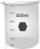
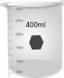

మాన్యువల్
1. పవర్ బటన్పై క్లిక్ చేసే పరికరాన్ని ఆన్ చేసి, వాయిద్యం ప్రారంభించడానికి 30 నిమిషాలు వేచి ఉండండి.
2. 0.01 N H2SO4 లో పొటాషియం డైక్రోమేట్ యొక్క సజల ద్రావణాన్ని 0.001 M అని చెప్పండి.
3. శుభ్రమైన, పొడి బీకర్ తీసుకోవడానికి బీకర్పై క్లిక్ చేయండి. శుభ్రమైన, పొడి బీకర్లో ద్రావణాన్ని పోయడానికి వాల్యూమెట్రిక్ ఫ్లాస్క్పై క్లిక్ చేయండి.
4. బీకర్ నుండి తగిన పరిమాణంలో ద్రావణాన్ని సేకరించడానికి మైక్రోపిపెట్ పై క్లిక్ చేయండి. దానిపై క్లిక్ చేయడం ద్వారా క్యూట్ తీసుకోండి.
5. మైక్రో పిప్పెట్ నుండి క్యూవెట్పై క్లిక్ చేయడం ద్వారా ద్రావణాన్ని కువెట్లోకి పోయాలి. (వాస్తవ కొలతలలో, కువెట్టి దాని వాల్యూమ్లో సుమారు మూడింట రెండు వంతుల వరకు నిండి ఉంటుంది.)
6. తెరవడానికి స్పెక్ట్రోఫోటోమీటర్ మూతపై క్లిక్ చేయండి.
7. నమూనా హోల్డర్లో ఉంచడానికి కువెట్పై క్లిక్ చేయండి. ఒకరు aq ఉపయోగించాలి. ఈ కొలతలో 0.01 N H2SO4 నమూనా ఖాళీగా లేదా సూచనగా. ఇక్కడ డబుల్ బీమ్ స్పెక్ట్రోఫోటోమీటర్ చూపబడింది. ఈ సందర్భంలో, నమూనా నమూనాను నమూనా హోల్డర్లో మరియు నమూనా బ్యాంక్ లేదా రిఫరెన్స్ను ఒకేసారి రిఫరెన్స్ హోల్డర్లో ఉంచవచ్చు.
8. కంప్యూటర్ మానిటర్పై క్లిక్ చేసి, ఆపై స్కాన్ బటన్పై క్లిక్ చేసి తరంగదైర్ఘ్యం స్కాన్ను అమలు చేయండి మరియు తరంగదైర్ఘ్యం స్కాన్ను గమనించండి. నిజమైన స్పెక్ట్రోఫోటోమీటర్ ఆపరేషన్లో, నమూనా కోసం తగిన తరంగదైర్ఘ్యం సంఘటన కాంతిని ఎంచుకోవచ్చు మరియు తరంగదైర్ఘ్యం స్కాన్ను కంప్యూటర్ సాఫ్ట్వేర్ ద్వారా అమలు చేస్తారు. ఒకరు స్కాన్ను శోషణ లేదా ట్రాన్స్మిటెన్స్ మోడ్లో అమలు చేయవచ్చు. స్కాన్ డేటా కంప్యూటర్లో నిల్వ చేయబడుతుంది. స్పెక్ట్రోఫోటోమీటర్ ఒకే పుంజం పరికరం అయితే, మొదట నమూనా ఖాళీ లేదా సూచన ఒక కువెట్లో తీసుకోబడుతుంది మరియు తరంగదైర్ఘ్యం స్కాన్ నమూనా తరువాత నడుస్తుంది. సంబంధిత తరంగదైర్ఘ్యాల కోసం నమూనా డేటా నుండి సూచన డేటాను తీసివేయాలి.
9. కొత్త కొలతను ప్రారంభించడానికి రీసెట్ బటన్ పై క్లిక్ చేయండి. వేర్వేరు మార్గం పొడవు యొక్క క్యూట్లతో కొలతలను పునరావృతం చేయండి.
10. డేటా టాబ్పై క్లిక్ చేయడం ద్వారా మొత్తం డేటాను సేకరించండి. వేర్వేరు మార్గం పొడవు కోసం వివిధ తరంగదైర్ఘ్యాల వద్ద నమూనా యొక్క శోషణను ప్లాట్ చేయండి మరియు గరిష్ట శోషణల తరంగదైర్ఘ్యాన్ని నిర్ణయించండి, అనగా, స్పెక్ట్రల్ పీక్-స్థానాలు.
11. ఒక నిర్దిష్ట తరంగదైర్ఘ్యం (చెప్పండి, 350 ఎన్ఎమ్) వర్సెస్ పాత్ లెంగ్త్స్ కోసం శోషణ విలువలను ప్లాట్ చేయండి మరియు లీనియర్ రిగ్రెషన్ను లెక్కించండి. ఒక క్రమాంకనం యొక్క నాణ్యతను కొలవగల సహసంబంధ గుణకాన్ని గమనించండి మరియు అన్ని అమరిక బిందువులకు సరళ రేఖ ఎంతవరకు సరిపోతుందో ఇక్కడ చెబుతుంది.
12. 375 nm మరియు 440 nm అని చెప్పే రెండు ఇతర తరంగదైర్ఘ్యాల కోసం శోషక విలువలు వర్సెస్ పాత్ లెంగ్త్స్ యొక్క ప్లాటింగ్ పునరావృతం చేయండి మరియు సరళ రిగ్రెషన్లను లెక్కించండి.
13. 350 nm, 375 nm మరియు 440 nm అనే మూడు తరంగదైర్ఘ్యాల కోసం శోషక విలువల వర్సెస్ పాత్ లెంగ్త్స్ స్థానంలో ట్రాన్స్మిటెన్స్ తీసుకునే ఇలాంటి మూడు ప్లాట్లను నిర్మించండి మరియు సరళ రిగ్రెషన్లను లెక్కించండి. సహసంబంధ గుణకాలను గమనించండి.
14. శోషణ మరియు ప్రసార విలువలకు మార్గం పొడవుతో సరళ సంబంధం ఉందా లేదా అనే విషయాన్ని గమనిస్తూ లాంబెర్ట్ చట్టాన్ని ధృవీకరించండి.
15. ఇచ్చిన తరంగదైర్ఘ్యం కోసం సంబంధిత మార్గం పొడవు ద్వారా శోషణ డేటాను విభజించడం ద్వారా శోషణ కొలతలను 1 మిమీ మార్గం పొడవుకు సాధారణీకరించండి. ఇచ్చిన తరంగదైర్ఘ్యం వద్ద సాధారణీకరించిన డేటా (ప్రయోగాత్మక లోపం లోపల) మార్గం పొడవు-నిర్దిష్టంగా ఉందా? మీ ఫలితాలను చర్చించండి.
 
